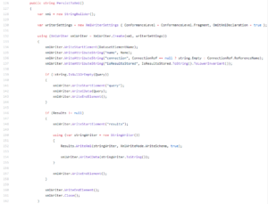

In the previous post, I wrote about using datasets in the ssisUnit test. By default, the dataset query is executed against the data source each time the test is run. But we also have an option to store the dataset’s result in the test file. In this post, I will show you how you can use it.
First - why would you want to store the datasets within the test file? Well, maybe you don’t want to hammer your database with hundreds of requests to prepare the expected data outcome. And/or you want to have everything in your unit test file, and you don’t want to write all that CAST/CONVERT information for the datatypes when preparing the dataset?
The ssisUnit GUI does not support creating the persisted dataset. If you switch the IsResultsStored flag to true on the dataset’s properties, it gives a warning “The expected dataset’s () stored results does not contain data. Populate the Results data table before executing.” during the test run.
To find out more about it, take a look at the source code. Open the Dataset.cs file and go to the line 126. There is a method PersistToXml() that writes the Dataset as XML.
 In the lines 146 - 158 it verifies existance of the Results element. If it exists, the XML node results is prepared, and the content of the Results element is saved as CDATA.
if (Results != null) { xmlWriter.WriteStartElement(“results”);
using (var stringWriter = new StringWriter())
{
Results.WriteXml(stringWriter, XmlWriteMode.WriteSchema, true);
xmlWriter.WriteCData(stringWriter.ToString());
}
xmlWriter.WriteEndElement();
}
The Results object is defined in line 186 - it’s stored internally as the DataTable object. So, it must be serialised to store and retrieve it from the saved XML file:
[Browsable(false)] public DataTable Results { get; internal set; }
The recipe for the cached/stored result is easy: use the <results /> element in your .ssisUnit file and fill it with the serialised DataTable.
Preparing the datatable
I will again use the 15_Users_Dataset.dtsx package for testing. I will create 15_Users_Dataset_Persisted.ssisUnit file as a copy of the 15_Users_Dataset.ssisUnit file and replace the Empty table test: expected dataset as the cached result. To prepare the serialised datatable I used parts of an example from the documentation and Linqpad. Go to the Scripts folder and open the script 15_Users_Dataset_Persisted.linq. The file has some comments, so it should be easy to understand. The main part is:
DataColumn name = new DataColumn(“Name”, typeof(System.String)); name.MaxLength = 50; table.Columns.Add(name);
DataColumn login = new DataColumn(“Login”, typeof(System.String)); login.MaxLength = 12; table.Columns.Add(login);
table.Columns.Add(“IsActive”, typeof(System.Boolean)); table.Columns.Add(“Id”, typeof(System.Int32)); table.Columns.Add(“SourceSystemId”, typeof(System.Byte)); table.Columns.Add(“IsDeleted”, typeof(System.Boolean));
// Login is char(12), the database has ANSI_PADDING = ON, so pad the string with spaces table.Rows.Add(new object[] { “Name 1”, “Login 1 “, 1, 1, 2, 0 }); table.Rows.Add(new object[] { “Name 2”, “Login 2 “, 1, 2, 2, 0 }); table.Rows.Add(new object[] { “Name 3”, “Login 3 “, 0, 3, 2, 0 });
If you want to use Linqpad - remember to set the language as C# Statement(s) and hit Execute button. The result of the script is as follows:
In the .ssisUnit test file, the <NewDataSet /> element should be wrapped in the <result /> as CDATA:

The part that took me a lot of time to figure out was the Login column. In the database, it has char(12) data type. It is very dependent on the [ANSI_PADDING](https://docs.microsoft.com/en-us/sql/t-sql/statements/set-ansi-padding-transact-sql?view=sql-server-2017) setting. The recommended setting is ANSI_PADDING ON, which means it pads the strings with trailing spaces for the char data type columns. And that’s the setting for the ssisUnitLearningDB - the database used for this blog post series.
How does it affect the test? When you persist the char column in the test file, you have to also pad the string with spaces if the column was created with ANSI_PADDING ON setting. If you don’t pad the string column, the test will not pass. To illustrate it I prepared some additional datasets and assertions.
I’m testing different dataset settings and how it affects the assertions results. Even if you set the dataset as persisted, ssisUnit expects the query, so I’m mostly using T-SQL’s comment --as a placeholder. But I also checked if it has to be the same query as I used to prepare the persisted dataset. Running the test you will see, that without padding the Login column data the assertions don’t return True.
The data types
When you create the DataTable object you add the columns of the specific type, like
table.Columns.Add(“Id”, typeof(System.Int32))
How do you know what types you should use? You can guess of course (I did!), but you don’t have to. Take a look at the RetrieveDataTable() method in the DataTable.cs file (especially the lines 216 - 237). This is how ssisUnit converts the query result to the DataTable object for further comparison:
if (!IsResultsStored) { using (var command = Helper.GetCommand(ConnectionRef, Query)) { command.Connection.Open(); using (IDataReader expectedReader = command.ExecuteReader()) { var ds = new DataSet();
ds.Load(expectedReader, LoadOption.OverwriteChanges, new\[\] { "Results" });
if (ds.Tables.Count < 1)
{
throw new ApplicationException(
string.Format(
CultureInfo.CurrentCulture, "The dataset (\\"{0}\\") did not retrieve any data.", Name));
}
return ds.Tables\[0\];
}
}
}
I took this part of the code (along with the Helper.GetCommand()) and expanded it with writing metadata of the DataTable object. I use Linqpad and its Dump() method to quickly see the content. The full script GetDataTableMetadata.linq is located in the Scripts directory of the project.
As you can see, the Login column has Length == 12 and MaxLength == 12. It means, that string is padded with blanks. Also notice, that the bit column is mapped to System.Boolean and the tinyint column is mapped to System.Int32 - just like Int.
To sum up
If you want to store the dataset in the test file - no problem. The ssisUnit GUI does not support it, but the engine does. Use provided scripts to get the metadata of the dataset and serialise the prepared dataset. Then set the IsResultsStored flag to True and paste the serialised code directly to the ssisUnit file using <results /> and CDATA.


{kind=link}
{kind=link}
{kind=link}